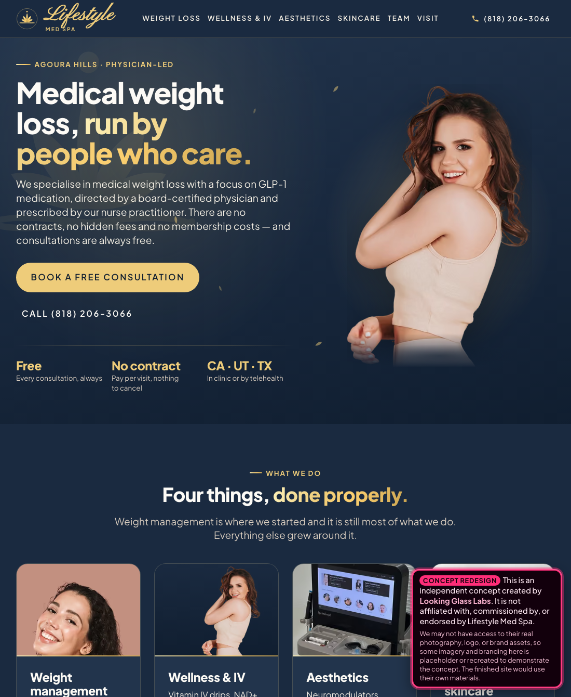

A concept, built unprompted
Nobody hired me. I'm a designer in Thousand Oaks, eight miles from your clinic. I built this because your reviews thank your staff by name and your current site never introduces them.
So the page is built around that: your navy and gold, your lotus, and all ten of your names signed in the script from your own logo.

Why it matters
Your team page lists ten people with real credentials, including a head nurse with fifty years behind her. Your portraits exist, but they sit two clicks down where nobody scrolling finds them. In a category full of anonymous GLP‑1 sellers, that roster is the most persuasive thing you own.
Your homepage has a "Google Reviews" heading with nothing underneath it. Someone deciding whether to trust you with a prescription scrolls to exactly that spot, finds a blank, and leaves. Your actual reviews are warm and specific and they are nowhere on the page.
Your IV menu, HydraFacial tiers and weight‑management pricing are all published, but buried on inner pages. Put them where people look and the calls you get are from people ready to book, not people asking what it costs.
What it costs
One‑off. You own all of it.
More pages, deeper customisation, built around how you actually run the practice. Treatment pages, one real service‑area page instead of the ~190 near‑duplicate city pages you have now, and booking that matches your four‑day week.
On top of the build.
Hosting and all technical upkeep. Keeping the SEO healthy. Text and copy edits, swapping photos, updating hours, prices, menus and services. Seasonal changes.
New pages or sections. Branding or logo work. Photography. New long‑form writing. New features or integrations. Anything that is a new project rather than an update.
Option 4 — marketing support, scope TBD. My day job is CMO in tech: 13+ years at that level, brands with billions of earned impressions and communities in the millions. If you want that pointed at the practice, we can talk.
Why $1,000, not $2,450. It's already built, so I'm not starting from a blank page and won't price it as if I were. Nobody hired me. I'd rather start a relationship than win a bidding war.
Three slides, 16:9. To regenerate the PDF: ./build-pdf.sh from
this folder, or just print this page to PDF with backgrounds enabled.